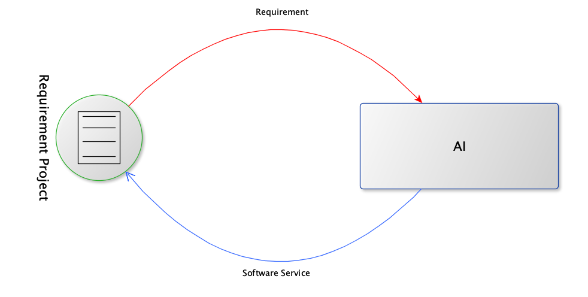
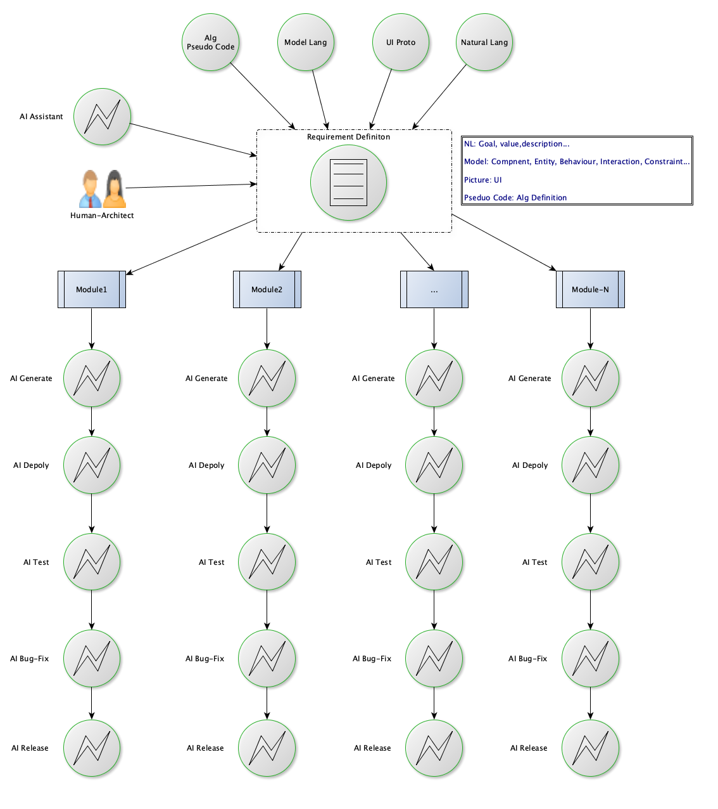

KreeX：面向AI Programming的软件工程范式
Created By RV, and licensed with Creative Commons "CC BY-NC-ND 4.0"
面向AI Programming的软件工程范式应该是什么样子，类似于哈姆雷特，一千个人的心中有一千个哈姆雷特。
具体到个人，我已经摆明了立场，旗帜鲜明地选了边：选AI那一边，坐在“终极范式是无人”那一桌。

我是程序员，但不是叛徒。只是历史的车轮面前，螳臂当车，只会化为车辙中的泥尘。
世界重新鲜活
现代的标准物理模型已经走到无法自证的泥沼，更多的理论仅在数学层面自洽，无法证实也无法证伪。而没有基础物理理论的革命性的重大突破，科技层面很难再有重大的创新。
所以，一直很灰心。
在IT圈内，自从摩尔定律不再生效，感觉这个世界似乎进入了停滞，甚至某种程度上开始崩坏，一切色彩鲜明的事物都在逐步暗淡。
LLM所引发的人工智能层面的变革，让我们觉得世界开始重新充满了活力，和无限的可能。
在软件开发及软件工程领域数十年的从业经历中，从来没有见过，也没有想象过，会有一条如此方向明确、工程可行、万事可期的颠覆性之路在我们面前铺开。
这个世界重新变得鲜活。科学万岁！
折中与技术债
当前，所有我们所做的，本质是折中，是在创造一种技术债。
因为，虽然AI还在不断地增强，但是AGI还没戏，短期内看不到任何希望，甚至业界已经有人在质疑LLM之路是否已经走到了尽头。
AGI，我们可以期待和等待，但是我们不能无所事事。
在软件工程流程中，既然暂时做不到完全的无人，那我们就追求极致的自动化、尽量减少人的环节。
“面向AI的Programming需要整个软件工程范式的革命”，应是我们共识的底线。
不管，最终它会是什么样子，基于当前“人+AI协作”这一基本的前提，我们可以开始设计工程层面的核心范式，并且在MVP工程中去实验、检验它。
并且尽量在此范式中，保留随时移除人的环节的可能性、可扩展性。

双圈运行，传统DevOps留痕、控制、审计

AI辅助下的需求工程，需求定义阶段封装系统复杂性
我们会从下述几个方面，进行讨论：
- 关于作者RV
- AI建议的自我指涉
- 四种范式
- AI驱动范式下的核心原则
- Rule 1: 软件成为灰盒，甚至黑盒
- Rule 2: 需求定义是唯一的人机契约
- Rule 3: 需求定义语言=自然语言+图形UI原型+模型语言+算法伪代码
- Rule 4: 需求定义的生成模式：AI辅助生成，人类决策确定
- Rule 5: 需求管理是核心：Requirement Over Development
- Rule 6: Kill IDE, Let IRE Be Born: Integrated Requirement Environment
- Rule 7: 架构师+AI Agents
- Rule 8: 架构师是唯一的人类：去除人<-->人沟通环节，避免知识传递及重新理解
- Rule 9: 架构师之后全程自动化
- Rule 10: 无人Coding，除非迫不得已
- Rule 11: 将LLM+AI Agents视为软件工程之外的基础设施
- Rule 12: 使用透明RPC微服务架构简化需求定义、及代码生成
- Rule 13: AI Agents需要分工：限定领域的准确度优先
- Rule 14: AI Agents直接通信协作
- Rule 15: 纯人->人机协作->无人：极限逼近无人模式使用MDA的方法论：CIM->PIM->PSM
- Rule 16: 双圈运行，无阻力升级：外圈AI范式，内圈传统DevOps体系，外圈输出注入内圈
- Rule 17: AI自动化流程的可观测性是强制约束
- Rule 18: 随时双向接管能力是强制约束
- Rule 19: 验证与生成环节环节的LLM必须不同
- Rule 20: 使用DevOps平台作为留痕平台
- Rule 21: 程序员不会消失，只会进化
相关背景
开启此专栏的相关背景，参阅专栏《KreeX》
- 声明在前
- 先行叠甲
- 关于AI Programming
- Coding与Programming
- 工程，而不是技术能力
- 面向AI Programming的软件工程
- 面向AI Programming的服务调用
- 要做什么
- 名字的由来
工程验证
透明RPC微服务框架
面向AI Programming 的透明RPC微服务框架，相关技术已实现。详细论述，参见姊妹专栏《KreeX: 透明RPC微服务架构》。
软件工程范式
基于本范式的 MVP 项目正在开发中。工程实践中的发现将随时调整范式清单， 本文所列范式将持续迭代。
毕竟，在先行叠甲之处，我们已经施法， "信奉法无定则：思想要进化，身段要柔和。哪里被锤通了，咱们立即改。"